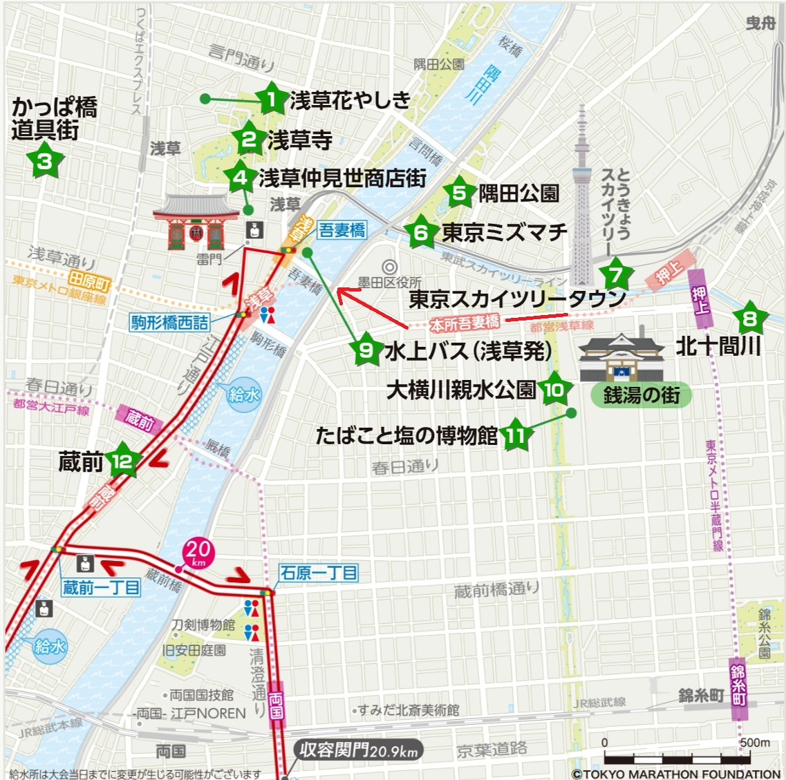
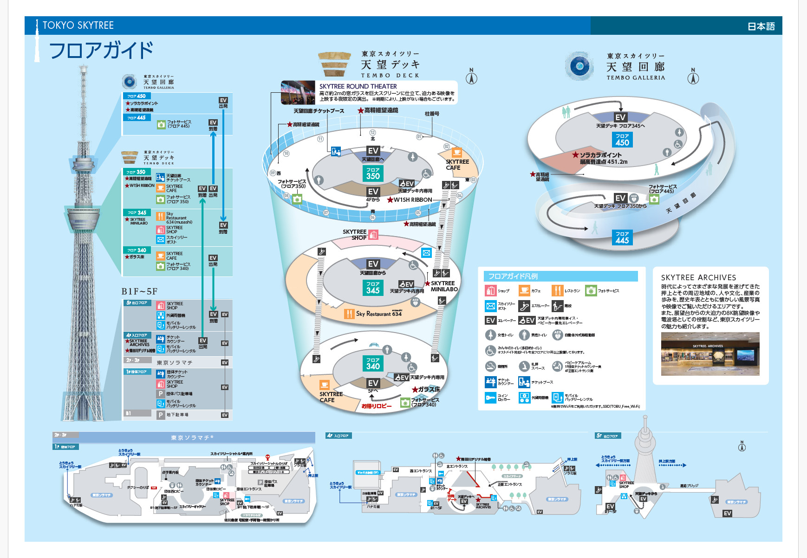
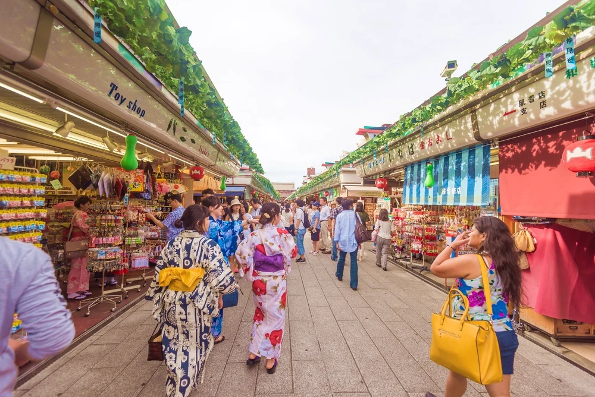

English
English
 日本語
日本語
晴空塔和浅草地区
来到东京时，晴空塔和浅草是必须参观的地方。
晴空塔和浅草地区
目的地是押上站。从押上站（晴空塔）B3出口或A2出口，直接进入东京天空树町商业大楼。
在大楼的4楼，您将到达晴空塔的入口。从那里购买门票后即可进入观景台。

晴空塔楼层指南
东京晴空塔被吉尼斯世界纪录认证为世界上最高的塔。您可以从450米高处俯瞰整个关东平原。
如果不购物，参观晴空塔大约需要2个小时。
带小孩的家庭还可以参观晴空塔旁边的墨田水族馆。
墨田水族馆
墨田水族馆
是一个像公园一样的水族馆，您可以自由放松地享受多种体验。
可以坐在水槽前的椅子上感受水波的轻柔摆动，或者在欣赏动物的同时在咖啡馆闲聊。它与传统水族馆不同，像是一个自由自在的公园。

浅草地区
从晴空塔步行约15分钟即可到达浅草。
建议途中进入商店享用午餐。

东京最古老的寺庙——浅草寺

浅草寺是东京最古老的佛教寺庙，建于645年。作为日本最著名的旅游景点之一，每年吸引众多国内外游客前来参观。
仲见世商店街
从雷门到浅草寺，约250米长的商店街称为仲见世通。
台场
从浅草乘船可到达台场。
请事先查看水上巴士的时间表，并提前购票以确保及时出发。
如果错过时间，您也可以乘坐电车到达台场海滨公园站，请放心。
水上巴士时间表
台场海滨公园

台场海滨公园是东京市内著名的日落和夜景观赏点。
尽管白天的景色同样迷人，但傍晚时分，夕阳染红的台场海滨公园更显优雅美丽，令人陶醉。
到了晚上，彩虹大桥、东京塔和摩天轮等地标建筑点亮灯光，东京湾区的夜景令人惊叹。
自由女神像
自2000年12月以来，这座自由女神像一直在此，像高约11米（不包括基座），重量约9吨，尺寸为纽约原版的七分之一。

富士电视台
270度全景观景台
富士电视台是台场的标志性建筑。
其圆形标志性的“球体”观景台——称为“八球”（Hachitama），是可以进入的观景点。
从这里可以欣赏到彩虹大桥、东京塔和东京晴空塔等270度的全景风光。
日本未来科学馆
带小孩的家庭可以参观日本未来科学馆。
这里是一个国家科学博物馆，您可以体验最新的科学技术。